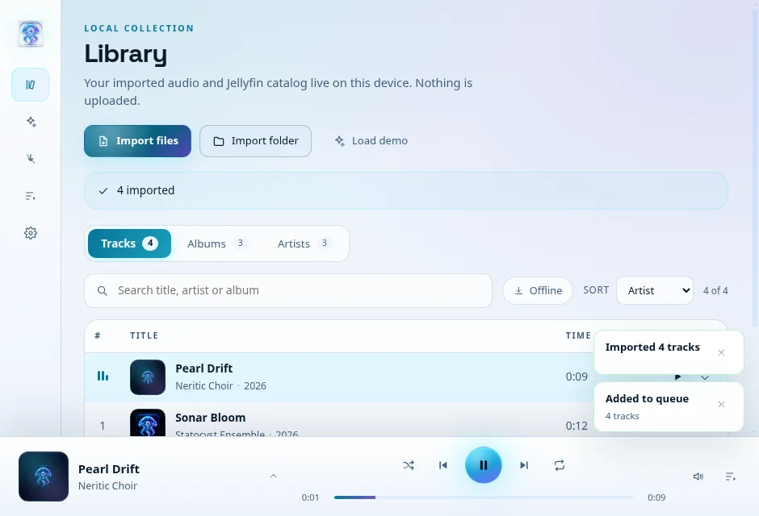
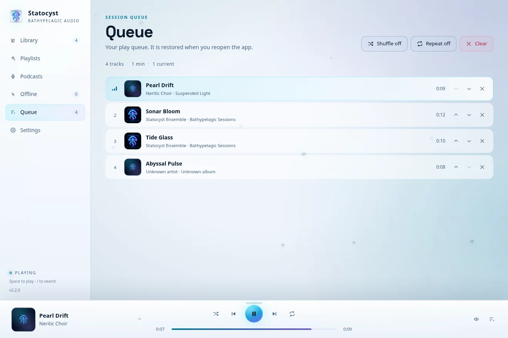

Local-first music · Jellyfin · Podcasts · Android Auto
Your music.
Every depth.
A player for the files you own, the Jellyfin library you built, and the podcasts you follow. Desktop, tablet, phone, and the car. One queue that survives restarts. Nothing leaves your device unless you ask it.


One library. Every horizon.
These are captures from the current 2.2.0 build at desktop, tablet and phone widths — not renders. The same catalog, queue and artwork travel across each layout.


Built for the way a library actually lives.
No account layer, no cloud library. Import what you have, connect a server if you want one, and keep the queue yours.

Local first
Your library is not a rental.
Import files, read their metadata, and play them straight from the device. The catalog lives in embedded libSQL; local playback does not make a network request.
- MP3, FLAC, OGG and WAV
- Artwork and metadata read on import
- No account, no upload, no telemetry

Queue
One queue. All the way down.
The queue is authoritative, not a side effect of the current screen. Move a track, remove one, close the app, come back; the queue and the play position are still there.
- Reorder and remove from the queue
- Resume at the saved position
- Shuffle and repeat state persisted
Jellyfin + mobile
The same library in your pocket.
Connect a standard Jellyfin server, sync the music catalog and stream with the session kept on the device. Jellyfin is optional: standalone local playback stays the default.
- Standard server login and catalog sync
- Direct play where the source allows it
- Android background media session
See it move.
Three silent transition studies captured from the Android build: Library into Playlists, Queue, and Now playing.
Desktop and car motion captures are not in this draft. Only clips that exist are shown.
Android Auto, without the WebView.
The car browses the indexed catalog and the saved queue directly from the native media service. Playback keeps going when the app is not on screen, and the queue is the same one you left on the phone.
- Cold-start browse without launching Angular
- Saved queue, shuffle order and position restored
- Artwork served through a token-free content provider
- Head-unit and controller allowlist
Preview note: the car screens are constructed from the app’s own artwork, type and queue on the standard Android Auto media surface. They use Statocyst’s real MediaLibraryService browse tree — Recently played, Favorites, Playlists, Podcasts, Song radio, Albums, Artists, All tracks and Queue — plus its shuffle, repeat and heart actions. Every other screen on this page is a real capture; a Desktop Head Unit capture is still pending.

Constructed from the app’s own artwork, type and queue, using the real MediaLibraryService browse categories and session actions. Not a real head-unit capture.
Built in the open. Shipped with caveats.
Statocyst is MIT licensed. The source, release notes and checksums are on GitHub. The desktop builds are unsigned, Android and iOS are sideloads, and Linux is the reference desktop target — state that plainly instead of hiding it in a FAQ.
Read the sourceTake the tide home.
Current release {{RELEASE_NAME}}, published {{RELEASE_DATE}}. Choose a platform; the release page carries checksums and notes.
Install notes for unsigned and sideloaded builds
macOS Open the DMG, drag Statocyst to Applications, then right-click the app → Open the first time.
Windows Run the installer. If SmartScreen appears, choose More info → Run anyway.
Linux Make the AppImage executable: chmod +x statocyst-*.AppImage, then run it. Or install the .deb.
Android Allow installs from your browser or file manager, then open the APK. Android Auto needs Unknown sources enabled for this build.
iOS The IPA is ad-hoc signed and must be sideloaded with your own tool and signing identity.